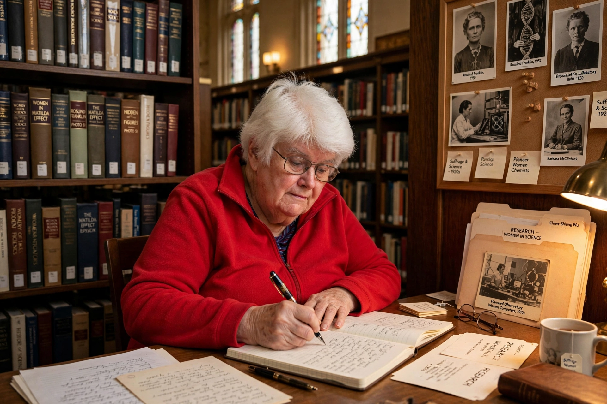

Margaret Walsh Rossiter (born 1944) is an American historian of science at Cornell University, known for her multi-volume Women Scientists in America and for coining the term "Matilda effect" for the systematic under-recognition of women scientists.

| Born | 1944 |
|---|---|
| Institution | Cornell University |
| Known for | Matilda effect |
Rossiter documented the "hierarchical segregation" and "territorial segregation" of women in American science. She adapted Robert Merton's "Matthew effect" to name the Matilda effect after suffragist Matilda Joslyn Gage.
She received a MacArthur Fellowship (1989) and the Sarton Medal from the History of Science Society (1991).